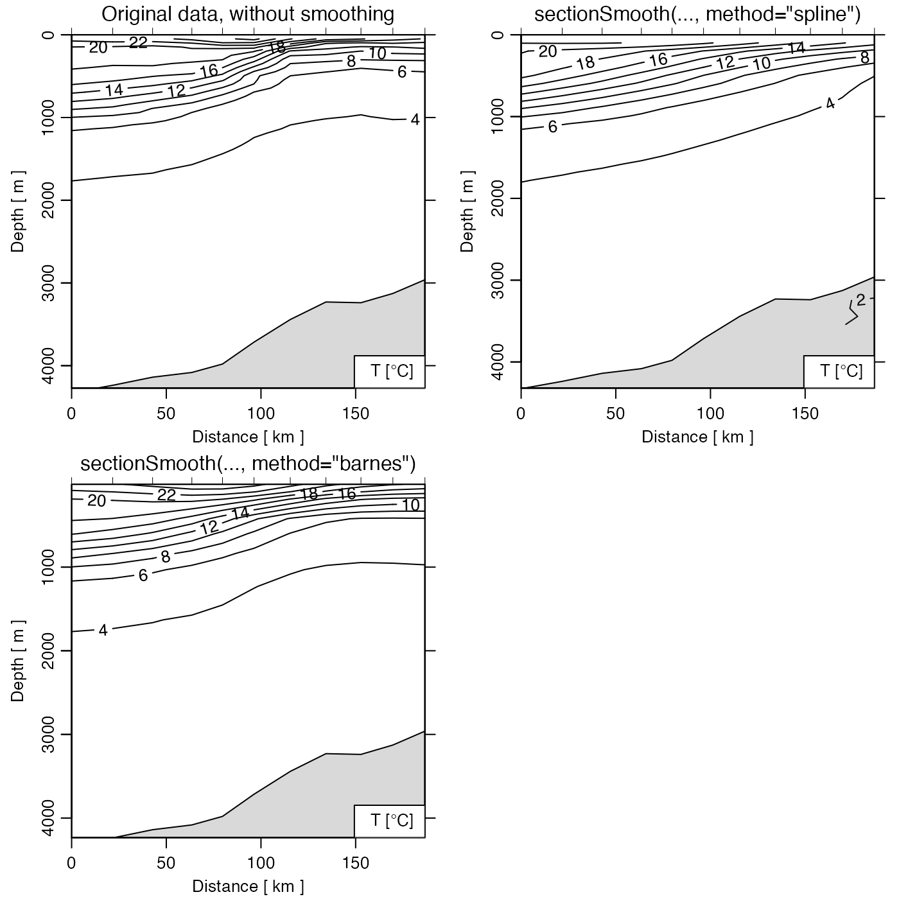

Smooth a section, in any of several ways, working either in the vertical direction or in both the vertical and lateral directions.
sectionSmooth(
section,
method = "spline",
x,
xg,
yg,
xgl,
ygl,
xr,
yr,
df,
gamma = 0.5,
iterations = 2,
trim = 0,
pregrid = FALSE,
debug = getOption("oceDebug"),
...
)A section object containing the section to be smoothed.
For method="spline", the pressure levels must match for each station in
the section.
A string or a function that specifies the method to use; see ‘Details’.
Optional numerical vector, of the same length as the number of stations in section,
which will be used in gridding in the lateral direction. If not provided, this
defaults to geodDist(section).
ignored in the method="spline" case, but passed to
interpBarnes() if method="barnes", to kriging
functions if method="kriging", or to method itself, if it
is a function.
If xg is supplied, it defines the x component of the grid, which by
default is the terms of station distances, x, along the track of the section. (Note
that the grid xg is trimmed to the range of the data x, because otherwise
it would be impossible to interpolate between stations to infer water depth,
longitude, and latitude, which are all stored within the stations in the
returned section object.)
Alternatively, if xgl is supplied, the x grid is established using seq(),
to span the data with xgl elements. If neither of these is supplied, the output
x grid will equal the input x grid.
similar to xg and xgl, but for pressure. (Note that
trimming to the input y is not done, as it is for xg and x.)
If ygl was not given, then a grid is constructed to span the pressures
of that deepest station with ygl elements. On the other hand,
if ygl was not given, then the y grid will constructed from the
pressure levels in the deepest station.
influence ranges in x (along-section distance) and y (pressure),
passed to interpBarnes() if method="barnes" or to
method, if the latter is a function. If missing, xr defaults to
1.5X the median inter-station distance and yr defaults to 0.2X
the pressure range. Since these defaults have changed over the evolution
of sectionSmooth, analysts ought to supply xr and yr
in the function call, tailoring them to particular applications, and
making the code more resistant to changes in sectionSmooth.
Degree-of-freedom parameter, passed to smooth.spline()
if method="spline", and ignored otherwise. If df is not provided,
it defaults to 1/5-th of the number of stations containing non-NA
data at the particular pressure level being processed, as sectionSmooth
works its way through the water column.
Values passed to
interpBarnes(), if method="barnes", and
ignored otherwise. gamma is the factor by which
xr and yr are reduced on each of succeeding iterations.
iterations is the number of iterations to do.
trim controls whether the gridded data are set to
NA in regions with sparse data
coverage. pregrid controls whether data are to be
pre-gridded with binMean2D() before being passed to
interpBarnes().
A flag that turns on debugging. Set to 1 to get a moderate amount of debugging information, or to 2 to get more.
Optional extra arguments, passed to either
smooth.spline(), if method="spline", and ignored otherwise.
A section object of that has been smoothed in some way.
Every data field that is in even a single station of the input object
is inserted into every station in the returned value, and therefore
the units represent all the units in any of the stations, as do the
flag names. However, the flags are all set to NA values.
This function produces smoothed fields that might be useful in
simplifying graphical elements created with plot,section-method().
As with any smoothing method, a careful analyst will compare the results
against the raw data, e.g. using plot,section-method().
In addition the problem of falsely widening narrow features such as
fronts, there is also the potential to get unphysical results with
spars sampling near topographic features such as bottom slopes and ridges.
The method argument selects between three possible methods.
For method="spline", i.e. the default, the section is smoothed
laterally, using smooth.spline() on individual pressure levels.
(If the pressure levels do not match up, sectionGrid() should
be used first to create a section object that can be used here.)
The df argument sets the degree of freedom of the spline, with
larger values indicating less smoothing.
For the (much slower) method="barnes" method, smoothing is done across
both horizontal and vertical coordinates, using interpBarnes().
The output station locations are computed by linear interpolation of
input locations, using approx() on the original
longitudes and longitudes of stations, with the independent variable
being the distance along the track, computed with geodDist().
The values of xg, yg, xgl and ygl control
the smoothing.
If method is a function, then that function is applied to
the (distance, pressure) data for each variable at a grid defined by
xg, xgl, yg and ygl. The function must
be of the form function(x,y,F,xg,xr,yg,yr), and must
return a matrix of the gridded result, with first index indicating
the "grid" station number and second index indicating "grid" pressure.
The x value that is supplied to this function is set as
the distance along the section, as computed with geodDist(),
and repeated for each of the points at each station. The corresponding
pressures are provided in y, and the value to be gridded is
in v, which will be temperture on one call to the function,
salinity on another call, etc. The other quantities
have the meanings as described below. See the “Examples”
for a description of how to set up and use a function for the gridding
method known as Kriging.
Other things related to section data:
[[,section-method,
[[<-,section-method,
as.section(),
handleFlags,section-method,
initializeFlagScheme,section-method,
plot,section-method,
read.section(),
section-class,
sectionAddStation(),
sectionGrid(),
sectionSort(),
section,
subset,section-method,
summary,section-method
# Unsmoothed (Gulf Stream)
library(oce)
data(section)
gs <- subset(section, 115<=stationId&stationId<=125)
par(mfrow=c(2, 2))
plot(gs, which="temperature")
mtext("unsmoothed")
# Spline
gsg <- sectionGrid(gs, p=seq(0, 5000, 100))
gsSpline <- sectionSmooth(gsg, "spline")
plot(gsSpline, which="temperature")
mtext("spline-smoothed")
# Barnes
gsBarnes <- sectionSmooth(gs, "barnes", xr=50, yr=200)
plot(gsBarnes, which="temperature")
mtext("Barnes-smoothed")
# Kriging
if (requireNamespace("automap",quietly=TRUE)&&requireNamespace("sp",quietly=TRUE)) {
krig <- function(x, y, F, xg, xr, yg, yr) {
xy <- data.frame(x=x/xr, y=y/yr)
K <- automap::autoKrige(F~1, remove_duplicates=TRUE,
input_data=sp::SpatialPointsDataFrame(xy, data.frame(F)),
new_data=sp::SpatialPoints(expand.grid(xg/xr, yg/yr)))
matrix(K$krige_output@data$var1.pred, nrow=length(xg), ncol=length(yg))
}
gsKrig <- sectionSmooth(gs, krig)
plot(gsKrig, which="temperature")
mtext("Kriging-smoothed")
}
#> [using ordinary kriging]
#> Warning: NaNs produced
#> [using ordinary kriging]
#> Warning: NaNs produced
#> [using ordinary kriging]
#> Warning: NaNs produced
#> [using ordinary kriging]
#> Warning: NaNs produced
#> [using ordinary kriging]
#> Warning: NaNs produced
#> [using ordinary kriging]
#> Warning: value out of range in 'bessel_k'
#> Warning: value out of range in 'bessel_k'
#> Warning: value out of range in 'bessel_k'
#> Warning: value out of range in 'bessel_k'
#> Warning: value out of range in 'bessel_k'
#> Warning: value out of range in 'bessel_k'
#> Warning: value out of range in 'bessel_k'
#> Warning: value out of range in 'bessel_k'
#> Warning: value out of range in 'bessel_k'
#> Warning: value out of range in 'bessel_k'
#> Warning: value out of range in 'bessel_k'
#> Warning: value out of range in 'bessel_k'
#> Warning: value out of range in 'bessel_k'
#> Warning: value out of range in 'bessel_k'
#> Warning: value out of range in 'bessel_k'
#> Warning: value out of range in 'bessel_k'
#> Warning: value out of range in 'bessel_k'
#> Warning: value out of range in 'bessel_k'
#> Warning: value out of range in 'bessel_k'
#> Warning: value out of range in 'bessel_k'
#> Warning: value out of range in 'bessel_k'
#> Warning: value out of range in 'bessel_k'
#> Warning: value out of range in 'bessel_k'
#> Warning: value out of range in 'bessel_k'
#> Warning: value out of range in 'bessel_k'
#> Warning: value out of range in 'bessel_k'
#> Warning: value out of range in 'bessel_k'
#> Warning: value out of range in 'bessel_k'
#> Warning: value out of range in 'bessel_k'
#> Warning: value out of range in 'bessel_k'
#> Warning: value out of range in 'bessel_k'
#> Warning: value out of range in 'bessel_k'
#> Warning: value out of range in 'bessel_k'
#> Warning: value out of range in 'bessel_k'
#> Warning: value out of range in 'bessel_k'
#> Warning: value out of range in 'bessel_k'
#> Warning: value out of range in 'bessel_k'
#> Warning: value out of range in 'bessel_k'
#> Warning: value out of range in 'bessel_k'
#> Warning: value out of range in 'bessel_k'
#> Warning: value out of range in 'bessel_k'
#> Warning: value out of range in 'bessel_k'
#> Warning: value out of range in 'bessel_k'
#> Warning: value out of range in 'bessel_k'
#> Warning: value out of range in 'bessel_k'
#> Warning: value out of range in 'bessel_k'
#> Warning: value out of range in 'bessel_k'
#> Warning: value out of range in 'bessel_k'
#> Warning: value out of range in 'bessel_k'
#> Warning: value out of range in 'bessel_k'
#> Warning: value out of range in 'bessel_k'
#> Warning: value out of range in 'bessel_k'
#> Warning: value out of range in 'bessel_k'
#> Warning: value out of range in 'bessel_k'
#> Warning: value out of range in 'bessel_k'
#> Warning: value out of range in 'bessel_k'
#> Warning: value out of range in 'bessel_k'
#> Warning: value out of range in 'bessel_k'
#> Warning: value out of range in 'bessel_k'
#> Warning: value out of range in 'bessel_k'
#> Warning: value out of range in 'bessel_k'
#> Warning: value out of range in 'bessel_k'
#> Warning: value out of range in 'bessel_k'
#> Warning: value out of range in 'bessel_k'
#> Warning: value out of range in 'bessel_k'
#> Warning: value out of range in 'bessel_k'
#> Warning: value out of range in 'bessel_k'
#> Warning: value out of range in 'bessel_k'
#> Warning: value out of range in 'bessel_k'
#> Warning: value out of range in 'bessel_k'
#> Warning: value out of range in 'bessel_k'
#> Warning: value out of range in 'bessel_k'
#> Warning: value out of range in 'bessel_k'
#> Warning: value out of range in 'bessel_k'
#> Warning: value out of range in 'bessel_k'
#> Warning: value out of range in 'bessel_k'
#> Warning: value out of range in 'bessel_k'
#> Warning: value out of range in 'bessel_k'
#> Warning: value out of range in 'bessel_k'
#> Warning: value out of range in 'bessel_k'
#> Warning: value out of range in 'bessel_k'
#> Warning: value out of range in 'bessel_k'
#> Warning: value out of range in 'bessel_k'
#> Warning: value out of range in 'bessel_k'
#> Warning: value out of range in 'bessel_k'
#> Warning: value out of range in 'bessel_k'
#> Warning: value out of range in 'bessel_k'
#> Warning: value out of range in 'bessel_k'
#> Warning: value out of range in 'bessel_k'
#> Warning: value out of range in 'bessel_k'
#> Warning: value out of range in 'bessel_k'
#> Warning: value out of range in 'bessel_k'
#> Warning: value out of range in 'bessel_k'
#> Warning: value out of range in 'bessel_k'
#> Warning: value out of range in 'bessel_k'
#> Warning: value out of range in 'bessel_k'
#> Warning: Some models where removed for being either NULL or having a negative sill/range/nugget,
#> set verbose == TRUE for more information
#> [using ordinary kriging]
#> Warning: NaNs produced
#> [using ordinary kriging]
#> Warning: NaNs produced
